Complex K-theory, one of topology's main tools, combines twisted circles with exactly a + b + ab. Its key operations are your mult-add powers, and with them Adams and Atiyah proved in 1966 that only the 1-, 3- and 7-dimensional spheres can carry a multiplication like the complex numbers, quaternions and octonions.
That is the lead, and it is as tight a match as the soliton cube. It is also known, like everything else on this page. I checked each piece below with small worked examples in Python; nothing here proves anything new.
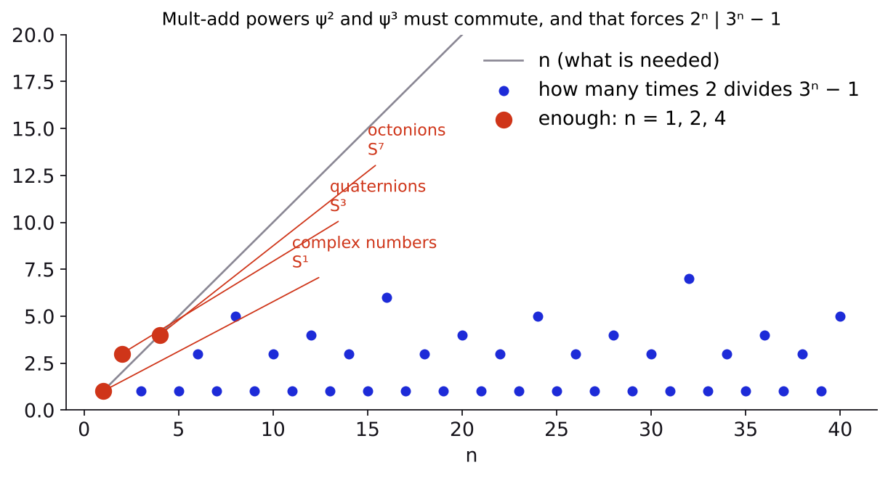
"Direct hit" means the topology tool is built on mult-add itself, not just compatible with it. "Weak" means you could use it, but mult-add adds nothing.
| Tool | Fit | What it does with mult-add | Known since |
|---|---|---|---|
| Complex K-theory, Adams operations | Direct hit | Its formal group law is a + b + ab; its operations ψᵏ are the mult-add powers (1+x)ᵏ − 1. Proves the 1, 2, 4, 8 theorem. | Atiyah, Hirzebruch, Adams, 1959–66 |
| Homology of the torus | Direct hit | Your cube's layers 1-3-3-1 and the tesseract's 1-4-6-4-1 are exactly the holes of the 3- and 4-torus, by dimension. | Classical (Künneth) |
| Covering spaces, winding numbers | Direct hit | Your helix is the universal cover of the mult-add circle. Winding = Σ log(1 + aₖ) / 2πi over a mult-add walk. | Classical |
| Chern numbers | Strong | The 2-D version of your SSH result: multiply around each small square, take the log, add up. Always a whole number. | Fukui–Hatsugai–Suzuki, 2005 |
| Riemann–Roch, Todd genus | Strong | The coefficients of log(1 + x) say every projective space has Todd genus 1; the counts it gives are Pascal's triangle. | Hirzebruch 1954; Mishchenko 1967 |
| Cobordism, formal group laws | Strong, as a map | Mult-add is one point on the map of all such laws: "height 1". It gives your dial a meaning (below). | Quillen, 1969 |
| Knots, linking, helicity | Good | Torus knots are z ↦ (zᵖ, z^q); the Alexander polynomial of one is a ratio of mult-add powers; helicity is linking. | Alexander 1928; Moffatt 1969 |
| Lefschetz fixed points | Good, small | The k-th mult-add power on the n-torus has (k − 1)ⁿ fixed points, Lefschetz number (1 − k)ⁿ. | Lefschetz, 1926 |
| Persistent homology | Weak | A tool for finding holes in data. Useful for your simulations, but there is no mult-add inside it. | Edelsbrunner et al., 2000s |
K-theory studies a space by the twisted bundles of circles (line bundles) it carries. Two of them combine by tensor product, and if you write each as x = L − 1, the combination rule is
which is your operation, exactly. (Some books write c(L) = 1 − L⁻¹ and get x + y − xy, the same law with the sign flipped.) Taking L to its k-th power gives the Adams operation
Two facts about these powers, both checked in Python on the projective spaces CP¹ to CP⁶:
Suppose a map S⁴ⁿ⁻¹ → S²ⁿ has Hopf invariant one (any multiplication on the sphere S²ⁿ⁻¹ would produce one). Glue a cell along it and you get a space with a bottom generator a and a top generator b, with a² = b. The mult-add powers act as
The prime fact makes μ₂ odd. The composing fact, ψ²ψ³ = ψ³ψ², forces
so 2ⁿ must divide 3ⁿ − 1, which happens only for n = 1, 2, 4. Those are the complex numbers, quaternions and octonions (dimensions 2, 4, 8).
Why it fits your rule: the outcome is purely geometric (which spheres can multiply), and the engine is nothing but mult-add powers and their behaviour mod p.
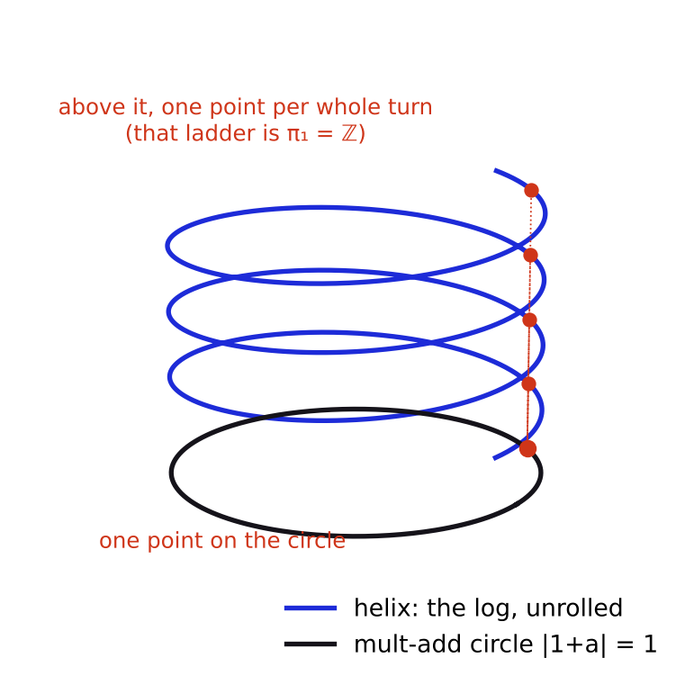
The mult-add circle is the set where |1 + a| = 1. The log, log(1 + a), unrolls it into a line, and drawing that unrolling in 3-D gives the helix you already use for curves. In topology this is the universal covering space of the circle, and the ladder of points above each point is its fundamental group π₁ = ℤ: loops are counted by whole turns.
The tool that reads off the turns is the formal group's invariant differential, dx/(1 + x). For a closed mult-add walk with steps aₖ:
Checked on a degree-3 loop with a wiggle: 3.000000. This is how your SSH chain's winding number worked, and it is also why mult-add powers are the only continuous self-maps of the circle up to deformation: the k-th power has winding k.
The torus T² is a circle times a circle. Built from cells, each circle is one point plus one loop, so Tⁿ has cells counted by (1 + t)ⁿ, your cube. I computed the holes (Betti numbers) of Tⁿ from a grid of cubes, n = 1 to 4, with honest boundary matrices:
So a tesseract corner with k switches on is a k-dimensional hole of the 4-torus: the subtorus spanned by those k circles. Grade = dimension is literally true here.
Holes multiply by the cup product, and on the torus it follows the rule e · e = 0 with order flipping sign. That is the fourth setting of your tesseract dial, beside dual numbers, mult-add and geometric algebra.
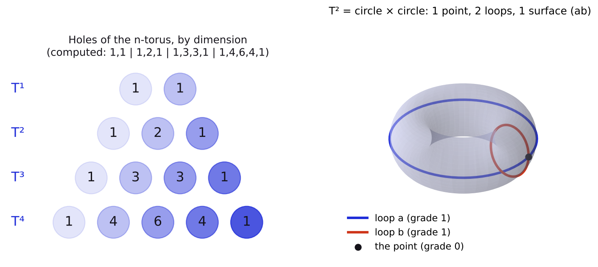
On the toric page, point counts over a finite field came out as polynomials in a = q − 1. The Euler characteristic of the same shape is that polynomial at a = 0, its constant term. Checked:
| Shape | Count in mult-add coordinates | Euler characteristic (a = 0) |
|---|---|---|
| Torus T² | a² | 0 |
| P¹ (sphere) | a + 2 | 2 |
| P² | a² + 3a + 3 | 3 |
| P¹ × P¹ | a² + 4a + 4 | 4 |
| P³ | a³ + 4a² + 6a + 4 | 4 |
Known: it is the q = 1 value of the point count, which for toric shapes equals the number of fixed points of the torus action. The mult-add reading is just that the torus pieces (every term with an a) contribute nothing.
A Chern number counts how many whole turns a field of quantum states twists over a torus. The standard way to compute it on a grid (Fukui, Hatsugai and Suzuki, 2005) is pure mult-add: multiply the overlaps around each small square, take the log, and add.
On the Qi–Wu–Zhang model it gives exactly −1, 0 or +1 depending on the mass m, to six decimals, even on a coarse 24 × 24 grid. It can only jump, never slide, because each square's log is taken on the helix and the total must close up.
This is the same story as a twisted bundle over a sphere: its Chern number is the winding of the gluing map around the equator, which is a mult-add power z ↦ zᵏ.
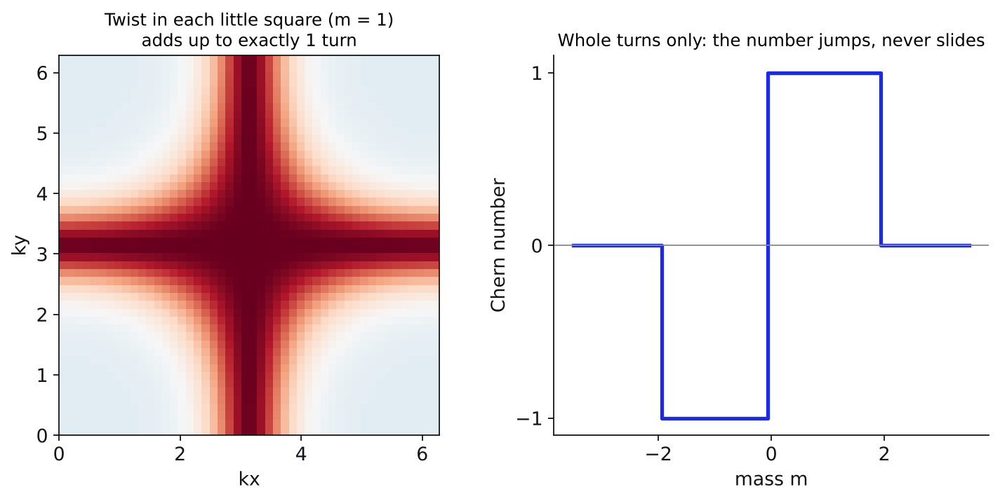
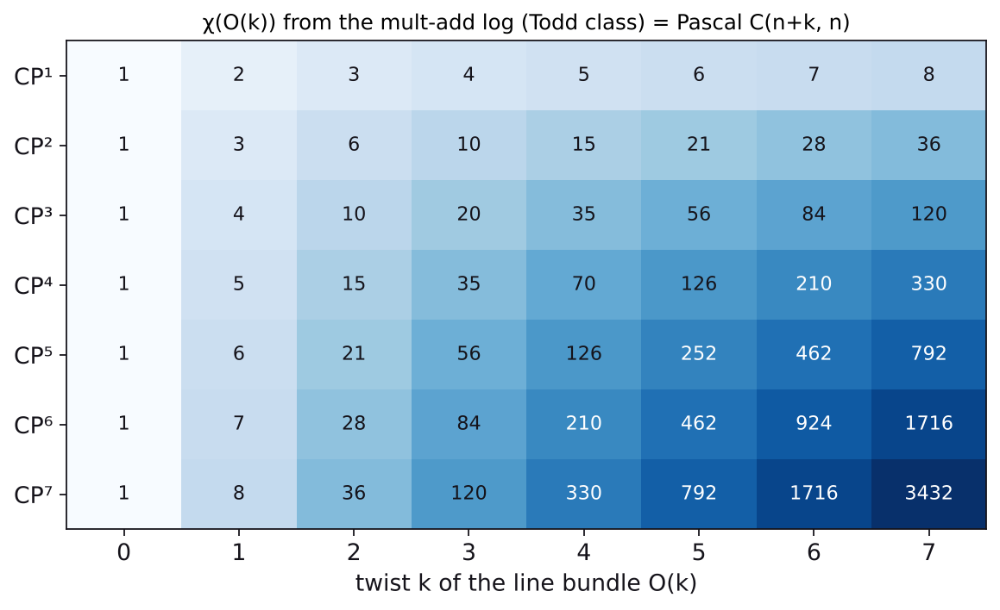
Your log, log(1 + x) = x − x²/2 + x³/3 − …, is the log of K-theory's group law. Mishchenko's theorem says the coefficient of xⁿ⁺¹ times (n + 1) is, up to sign, a geometric number of CPⁿ: its Todd genus. Read off: 1, 1, 1, 1, … Every projective space has Todd genus 1.
The Todd class t / (1 − e⁻ᵗ) built from the same law turns a twist k into a count, the Euler characteristic of the line bundle O(k). Checked for CP¹ to CP⁶, over a range of twists that includes negative ones:
which is Pascal's triangle again, now as counts of polynomials of degree k in n + 1 variables.
The tesseract page found one dial: what a switch does when it meets itself. Make it x · x = βx. Then (1 + ax)(1 + bx) = 1 + (a + b + βab)x, and as β slides you get:
| Setting | Law | Topology's name |
|---|---|---|
| β = 0 | a + b | Ordinary cohomology (derivatives, dual numbers) |
| β free | a + b + βab | Connective K-theory, where β is the Bott class |
| β = 1 | a + b + ab | Complex K-theory (mult-add) |
| Beyond the dial | Laws from elliptic curves | Elliptic cohomology, the next rung ("height 2") |
Quillen showed in 1969 that complex cobordism carries the universal law, and every other one, mult-add included, is a specialisation of it. Topologists sort these laws by height: additive is the degenerate end, mult-add is height 1 at every prime because of ψᵖ(x) ≡ xᵖ, and elliptic laws reach height 2. So "derive geometry from mult-add" sits on a real ladder, and mult-add is its first proper rung.
A torus knot is the circle sent to the torus by two mult-add powers at once, z ↦ (zᵖ, z^q). The trefoil is (2, 3). Its Alexander polynomial, the classic knot invariant, is a ratio of mult-add powers in a = t − 1:
Checked for (2,3), (2,5), (3,4), (3,5): each comes out a true polynomial with Δ(1) = 1 and degree (p − 1)(q − 1). The trefoil gives t² − t + 1.
Linking ties back to the Navier–Stokes page. Two helices wound k times around each other on the torus have Gauss linking number exactly k (computed: 1.0000, 2.0000, 3.0001), and Moffatt (1969) showed a fluid's helicity is the total linking of its vortex lines. The right-meets-left cross term is where that linking changes.
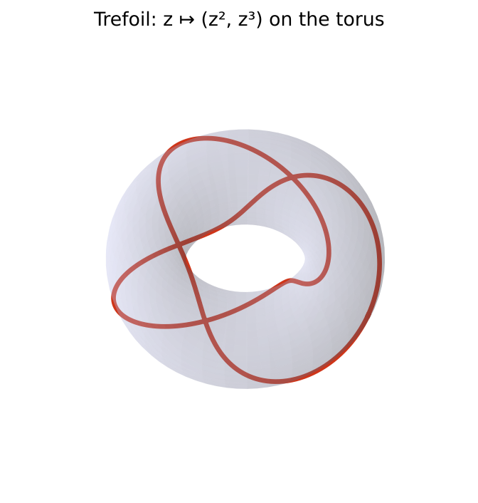
Here is the whole Adams–Atiyah argument drawn on the mult-add cube, using CP² (the space built on the Hopf map) as the worked case. Its Adams operations are truncated mult-add sums: ψᵏ(x) = x ⊕ x ⊕ … ⊕ x, the k-cube, cut off above grade 2 because CP² has no 6-cell.
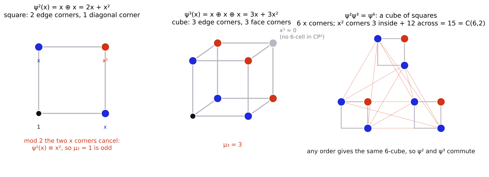
Blue corners are grade 1 (x), red are grade 2 (x²). The 6-cube is a cube of squares, so its 15 grade-2 corners are 3 inside one square plus 12 across two.
| Piece | Status |
|---|---|
| 2ⁿ | 3ⁿ − 1 only for n = 1, 2, 4, and those three work | Proved |
| Commuting ψ², ψ³ plus the mod-2 rule and odd h force n = 1, 2, 4 | Proved |
| On CP², ψᵏ is the k-fold mult-add sum kx + C(k,2)x², and ψʲψᵏ = ψʲᵏ for every j, k | Proved |
| CP² meets every hypothesis (μ₂ = 1, μ₃ = 3) | Proved |
| The glued space's K-theory has that two-cell shape, and ψᵏ exists, is additive, composes and obeys the mod-p rule there | Given (standard K-theory) |
File: HopfInvariantOne.lean in math-theory/topology/lean. Core Lean 4.37.0-rc1, no mathlib, no sorry, only Lean's standard axioms. Run it with lean HopfInvariantOne.lean.
theorem only_one_two_four (n : Nat) (hn : 1 ≤ n) (h : 2 ^ n ∣ 3 ^ n - 1) :
n = 1 ∨ n = 2 ∨ n = 4
theorem hopf_invariant_one (n : Nat) (hn : 1 ≤ n) (h μ₂ μ₃ : Int)
(hodd : IsOdd h) (hmod : (2 : Int) ∣ μ₂ - h)
(hc : psi n 2 μ₂ (psi n 3 μ₃ ⟨1, 0⟩) = psi n 3 μ₃ (psi n 2 μ₂ ⟨1, 0⟩)) :
n = 1 ∨ n = 2 ∨ n = 4
theorem psi_compose (j k : Nat) : psiT j (mpow k) = mpow (j * k)All three come from one move: turn the cube's axes in a circle, axis 1 to axis 2 to axis 3 and so on, and watch which corners move together. Every proof below is checked in core Lean with nothing taken as given. Lean builds the cube's layer counts from Pascal's rule, which is one mult-add step: multiplying by (1 + x) adds an axis and every corner appears twice, switch off and switch on. It first proves the box theorem (1 + x)ⁿ = Σ C(n,k)xᵏ, the cube's corner pieces adding up to the box.
For n ≥ 2, n divides every middle layer of the n-cube exactly when n is prime. In mult-add terms: the mult-add n-th power (1 + x)ⁿ − 1 equals the plain power xⁿ mod n only for primes. This is the identity the AKS primality test (2002) is built on.
Why, on the cube: turning the axes moves middle corners in groups. For a prime p no middle corner can come back early, so every group has exactly p corners. For 4, the corner 1010 comes back after 2 turns, and 6 corners is not a multiple of 4.
How Lean proves it: one direction from k·C(p,k) = p·C(p−1,k−1); the other by taking a prime factor p of a composite n and showing, with Lucas, that C(n−1, p−1) ≡ 1 mod p, so n can't divide C(n,p).
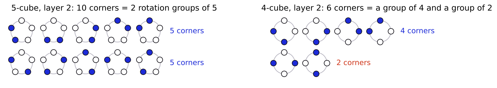
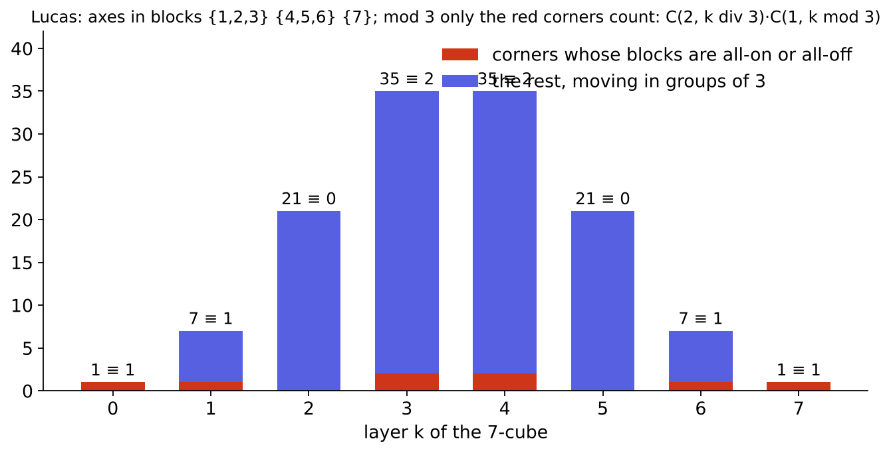
To find C(n,k) mod p, write n and k in base p and multiply the C's of their digits. For 7 = 21 in base 3, the layers of the 7-cube mod 3 are C(2, k div 3)·C(1, k mod 3).
Why, on the cube: split the axes into blocks of p and turn each block on its own. Mod p, every corner that moves is in a group of p and disappears. What's left are corners where each block is all-on or all-off, and counting those is choosing whole blocks, one digit at a time.
How Lean proves it: it shows the digit product obeys Pascal's rule mod p, case by case on whether adding an axis carries into the next digit. The only carry that needs a prime is the one where the p-cube's middle appears, and that middle is divisible by p.
For a prime p and any whole number a, aᵖ − a is a multiple of p.
Why, on the cube: take the grid cube with a points along each of p axes, aᵖ points in all. Turning the axes moves points in groups of p, except the a points on the main diagonal, which stay put. So aᵖ − a splits into groups of p. These are Fermat's necklaces.
How Lean proves it: through mult-add. Only the two end corners of the p-cube survive mod p, so (1 + x)ᵖ ≡ 1 + xᵖ: the mult-add p-th power is the plain p-th power. Then walk up from 0 one unit at a time; each step passes through that identity.
Lean proves the necklace pictures' conclusions by the Pascal route rather than by counting necklaces, since counting orbits needs set machinery core Lean doesn't have.
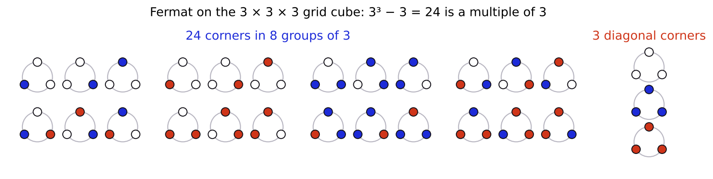
| Theorem in CubeProofs.lean | Statement |
|---|---|
| binomial | (1 + x)ⁿ = Σₖ C(n,k) xᵏ, with C built from Pascal's rule |
| prime_dvd_middle | p prime, 0 < k < p ⇒ p | C(p,k) |
| aks_middle | n ≥ 2: (n | C(n,k) for all 0 < k < n) ⇔ n prime |
| lucas_step, lucas | C(n,k) ≡ product of C(nᵢ,kᵢ) over base-p digits (mod p) |
| frobenius | (1 + x)ᵖ ≡ 1 + xᵖ (mod p) |
| fermat | aᵖ ≡ a (mod p) |
Core Lean 4.37.0-rc1, no mathlib, no sorry, only Lean's standard axioms. File: lean/CubeProofs.lean in math-theory/topology. All three theorems are classical (Fermat 1640, Lucas 1878; the prime identity long predates AKS). What's new is only the core-Lean check and the cube reading.
Two more proofs, both checked in core Lean with nothing taken as given. They live in a new file, KummerWilson.lean, which builds on the cube's layer counts from CubeProofs.lean.
The exact power of p that divides C(j+k, k), the number of corners of the (j+k)-cube with k switches on, is the number of carries when you add j and k in base p. Lucas says whether p divides the count; Kummer says how many times.
Why, on the cube: 5 + 4 in base 3 is 12 + 11 = 100, two carries, and C(9,4) = 126 = 3² × 14. Coloured by the power of 3, the layers of the cube fall into the same nested triangles at every scale, one scale per base-3 digit.
How Lean proves it: with digit sums. Each carry trades p units of digit sum for a single 1, so (p − 1) × carries = s(j) + s(k) − s(j+k). The cube's absorption rule, (k+1)·C(n+1,k+1) = (n+1)·C(n,k), moves the power of p in the layer count by exactly the same amount as adding one corner moves the digit sums. So the two stay equal all the way up.
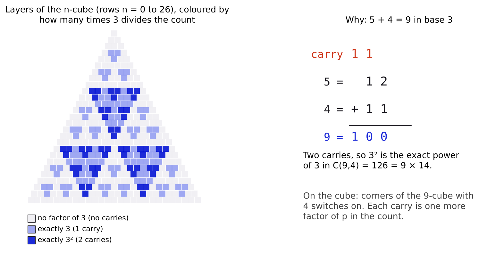
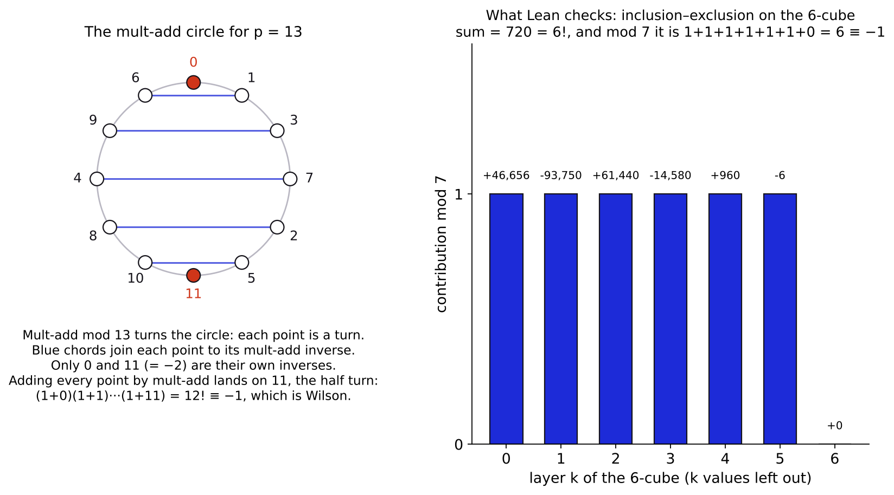
For a prime p, (p − 1)! leaves remainder p − 1 when divided by p, that is, (p − 1)! ≡ −1. For n ≥ 2 this happens exactly when n is prime, so it is a primality test, though a slow one.
Why, on the circle: mod p, mult-add turns the points 0 to p − 2 around a circle, because shifting by one turns mult-add into multiplication of 1 to p − 1. Every point has a mult-add inverse, its mirror image. Only 0 and p − 2, the half turn, are their own mirrors. So when you mult-add every point together, the pairs cancel and you land on the half turn: (1+0)(1+1)···(1+(p−2)) = (p − 1)! ≡ −1.
How Lean proves it: by counting on the cube instead. Inclusion–exclusion over the corners of the (p−1)-cube counts the orderings of p − 1 things: Σₖ (−1)ᵏ C(p−1,k)(p−1−k)ᵖ⁻¹ = (p − 1)!. Mod p each layer's signed count is 1, and by Fermat each power is 1, except the last layer, which is 0. So (p − 1)! ≡ p − 1 ≡ −1.
The circle picture needs a point that walks all the way round (a primitive root). That is a known theorem (Gauss), but it isn't proved in the Lean file, which is why Lean takes the cube route.
| Theorem in KummerWilson.lean | Statement |
|---|---|
| carries_dsum | (p − 1)·carries(a, b) + s(a+b) = s(a) + s(b), digit sums in base p |
| dsum_succ | s(x+1) + (p − 1)·v_p(x+1) = s(x) + 1 |
| layer_val_dsum | (p − 1)·v_p(C(j+k,k)) + s(j+k) = s(j) + s(k) |
| kummer | p^c | C(j+k,k) and p^(c+1) ∤ C(j+k,k), where c = carries adding j and k |
| S_pow | Σₖ (−1)ᵏ C(n,k)(c−k)ᵐ = n! if m = n, and 0 if m < n |
| wilson | p prime ⇒ (p − 1)! ≡ −1 (mod p) |
| wilson_iff | n ≥ 2: (n − 1)! ≡ −1 (mod n) ⇔ n prime |
Core Lean 4.37.0-rc1, no mathlib, no sorry, only Lean's standard axioms. File: lean/KummerWilson.lean in math-theory/topology. Both theorems are classical: Kummer 1852; Wilson's theorem was stated by Waring in 1770 and first proved by Lagrange in 1771; the inclusion–exclusion count goes back to Euler. What's new is only the core-Lean check and the cube and circle reading.
Known: every match on this page, including the 1, 3, 7 theorem, the prime identity, Lucas, Fermat, Kummer and Wilson. The Lean files are new formal checks in core Lean, not new mathematics. K-theory's group law and Adams operations (1959–66), Quillen's map of formal group laws (1969), torus homology, covering spaces, Riemann–Roch, the Chern-number algorithm (2005), torus knots and helicity. Mathematicians already know that K-theory "is" the multiplicative formal group, and use it daily.
Possibly new, as a picture rather than a theorem: seeing the cube, the helix and the dial as one object that topology also uses. Your circle is K-theory's line bundle, your helix is its cover, your cube is the torus's holes, your powers are Adams operations, and your dial is the cohomology ladder. I did not find this told as one geometric story in one place, but each sentence of it is standard.
Sources and checks: checks.py, checks_output.txt, figures.py, fig_adams_cube.py, fig_cube_proofs.py, fig_kummer_wilson.py, lean/HopfInvariantOne.lean, lean/CubeProofs.lean and lean/KummerWilson.lean in your project folder under math-theory/topology. Main references: Adams and Atiyah, "K-theory and the Hopf invariant" (1966); Quillen, "On the formal group laws of unoriented and complex cobordism theory" (1969); Fukui, Hatsugai and Suzuki (2005); Moffatt, "The degree of knottedness of tangled vortex lines" (1969).